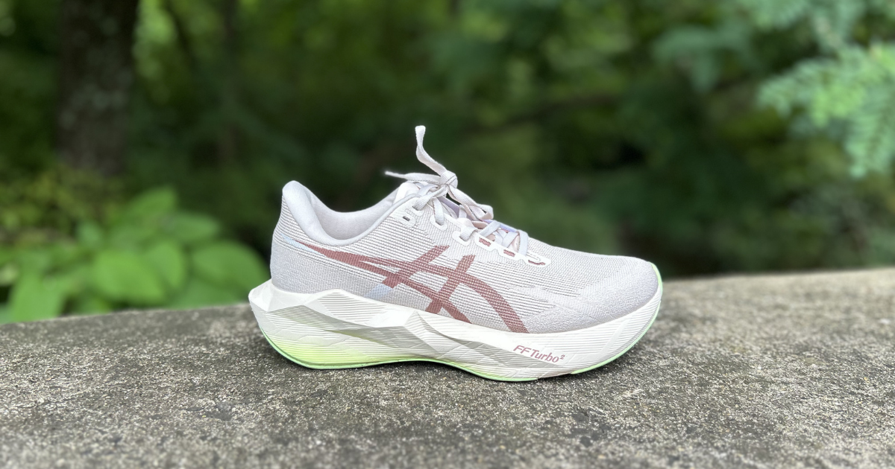
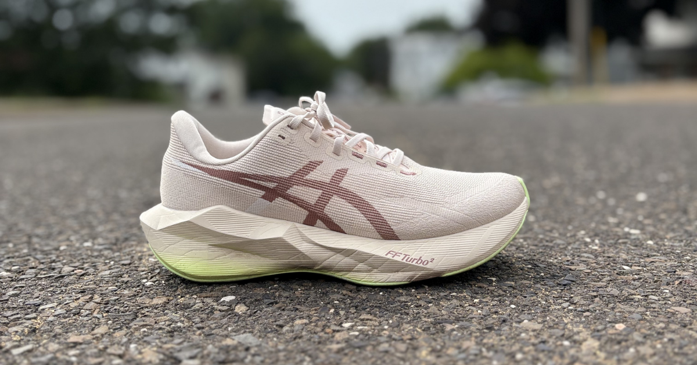

Few daily trainers have built the reputation of the ASICS Novablast. With each new version comes the same question: can ASICS improve on a shoe that runners already love?
The Novablast 6 answers that challenge with updated FF TURBO 2 foam, a refined upper, and the promise of an even more energetic ride. But do those changes translate to a better running experience, or is this simply another annual refresh?
After putting plenty of miles into the Novablast 6, we have our answer.

Miles Tested
The Good
Cody
At this point, I've had the privilege of running in every Novablast ASICS has released, and I have to say this might be the best one yet.
The FF TURBO 2 foam just works for me. It delivers the perfect combination of comfort and bounce, making easy miles feel effortless while still giving enough pop when it's time to pick up the pace. Compared to previous versions, I found myself naturally running faster, feeling fresher later into longer runs, and enjoying every step along the way.
While I could spend this entire review talking about the midsole, I'd be doing the upper a disservice. The lockdown is outstanding. My foot felt secure throughout every run without creating pressure points, and the fit worked exceptionally well for my slightly wider foot. It's one of those shoes you lace up, forget about, and simply enjoy the run.
Eric
The Midsole - putting FF Turbo2 in the forefoot of this shoe made such a difference to me. The 5 didn’t rebound back and provide as much “pop” as I would like and eventually bottomed out. It was a great daily model but lacked some versatility. The change in the foam to the 6 has created what I’d say is my favorite daily option of 2026.
The Fit/Upper - The NovaBlast 5 felt a little baggy and warm. The 6 seems to benefit from a more breathable upper and slightly more streamlined fit. It’s not a true race fit but it’s not supposed to be either. It strikes a great balance between performance and comfort
Emily
I won't take you back too far, but I've had an interesting relationship with the Novablast. I've loved some, hated others and nothing came close to the magic of the OG. I finally feel like that's changed with the Novablast 6. It's not as outlandish as the first version in terms of bounce and instability, but honestly...that might be a good thing. It takes all the best elements from the original and makes them more digestible.
The midsole is a little bit of sorcery. Upon first glance, it looks like it just contains a full slab of FF BLAST MAX. A fun foam on its own that gives the runner plenty of protection, response and durability. But if you look under the hood of the car (or shoe, in this case) you'll find a "trampoline pod" of FF TURBO SQUARED in the center of the forefoot. This gives the ride an extra bit of OOMPH that I found especially enjoyable at faster paces. I was skeptical about this layout but the two foams work flawlessly together to make a versatile shoe that can really handle anything you throw at it.
The upper is fairly breathable and fit nicely. The outsole did its job.
Blake
The Novablast 6 takes everything that made the Novablast 5 great and refines it. The redesigned midsole is noticeably more stable, especially in the heel, thanks to the updated geometry and outsole placement. While it initially feels a touch firmer, it softens up nicely as you run without losing its responsiveness or feeling packed down.
The biggest upgrade is the forefoot. The addition of FF Turbo² creates a much more energetic toe-off that makes it surprisingly easy to pick up the pace. I actually found myself turning an easy run into a progression run because the shoe felt so good when rolling onto my forefoot.
The new engineered woven mesh upper feels very similar to the Superblast 2. It’s comfortable, breathable, and secure. ASICS also upgraded the outsole with ASICSGRIP in the forefoot, improving both traction and durability while retaining AHAR LO rubber elsewhere.

The Bad
Cody
I know they say real men wear pink...I'm just not sure I subscribe to that. While this certainly isn't the worst colorway I've seen, the launch color wasn't exactly my favorite. Fortunately, that's an easy issue to solve if another colorway catches your eye.
My only real performance complaint is that this shoe almost wants to run faster than I sometimes do. During recovery runs, I found myself fighting the foam a bit. The ride is so lively and energetic that slowing things down didn't feel quite as natural as it does in something like a Gel-Nimbus. That's certainly not a deal breaker, but it's worth mentioning if most of your miles are truly recovery pace.
Eric
None - I’m not going to say this shoe is perfect as that’s subjective, however I don’t think there are any real notable weaknesses. The grip as far as I’ve tested is great, it’s more breathable, it’s comfortable, it’s versatile. The only thing I could maybe say isn’t great is potentially that it’s firmer than the 5 but that’s actually a pro for me
Emily
I sound like a broken record on all these reviews but I wish the Novablast 6 had a rocker technology. I think that would take from A+++ to S tier for me.
Also, I like the Rose Dust/Illuminate Yellow colorway I was sent, but the others are a little meh.
Blake
There honestly aren't many complaints with the Novablast 6. Runners who loved the softer, slightly wobblier feel of the Novablast 5 may notice that this version trades a bit of that sensation for added stability. It's still soft and bouncy, just in a more controlled package.
The Verdict
Cody
The Novablast 6 has quickly become one of my favorite running shoes of 2026.
The combination of the updated FF TURBO 2 midsole, excellent lockdown, and accommodating fit makes this a daily trainer that I genuinely look forward to running in. For my wider foot, the fit was excellent, and at $155, I think ASICS has delivered one of the best values on the market.
If you're looking for a shoe that can handle the majority of your weekly mileage while keeping every run fun, the Novablast 6 deserves to be near the top of your list.
Eric
As you can imagine after reading my good and bad sections, I REALLY like this shoe. Easily a top shoe of the year for me and maybe THE top shoe of the year. While the shoe isn’t going to be the best of any particular usage, for a daily trainer which is supposed to be decent at everything I believe it stands at the top for 2026.
Emily
Yes, yes, yes and yes. I would recommend the Novablast 6 whether you're a beginner runner or a seasoned veteran toeing the line of your 20th marathon. There's something here for everyone. It's also $155 which ain't so bad either. Go try it out.
Blake
The Novablast 6 is a meaningful evolution rather than a complete overhaul. It keeps the fun, bouncy personality of the Novablast line while making the ride more stable and significantly improving the forefoot's energy return. If I previously described the Novablast 5 as a "mini Superblast," I'd call the Novablast 6 a "mini Megablast." It delivers a more energetic ride while remaining approachable for everyday training. It’s one of my top 5 favorite trainers of the year so far.
Worth The Upgrade?
Cody
Yes.
For the record, I really enjoyed the Novablast 5, but the Novablast 6 simply feels more refined. The updated foam gives the ride a smoother, more energetic feel, and the overall package feels more polished from top to bottom.
If you're coming from the Novablast 5, I do think the upgrade is worthwhile. If you're coming from an older Novablast, it's an even easier recommendation.
Eric
YES, at least if you wanted more from the NovaBlast 5. The NovaBlast somewhat lost its way a little bit in a category that it invented. This year it’s back to its roots as a fast, bouncy, yet stable, and friendly daily option. The versatility of the shoe and the change from 5 to 6 definitely makes this upgrade worthy. Other notable changes are a more breathable fit and better forefoot grip which were 2 notable weaknesses of the 5.
Emily
Totally worth the $155. You're getting a do-it-all shoe without having to empty your entire wallet. I also think you'll get tons of miles out of the Novablast 6, which makes it even more justifiable.
Blake
At $155, the Novablast 6 I think it’s a fair price for a versatile daily trainer that can also pick up the pace. It delivers premium cushioning, impressive versatility, and technology borrowed from ASICS' higher-end shoes without the premium price tag. I personally think it’s worth the upgrade mainly to do the much more lively forefoot, and the more durable foam, however the Novablast 5 is still a great shoe if you find it on sale.
Buy If
- You want one daily trainer that can handle easy runs, long runs, and faster efforts.
- You enjoy a lively, energetic ride with a more responsive forefoot.
- You want a secure upper that still works well for a slightly wider foot.
- You are upgrading from the Novablast 5 or an older version and want a more refined ride.
Skip If
- Most of your running is at true recovery pace and you prefer a calmer, softer ride.
- You want a strongly rockered shoe with a pronounced rolling sensation.
- You preferred the softer, less controlled feel of the Novablast 5.
Disclosure
Disclosure: This product was provided by the manufacturer for review. As always, they had no input into our testing, opinions, or final verdict.